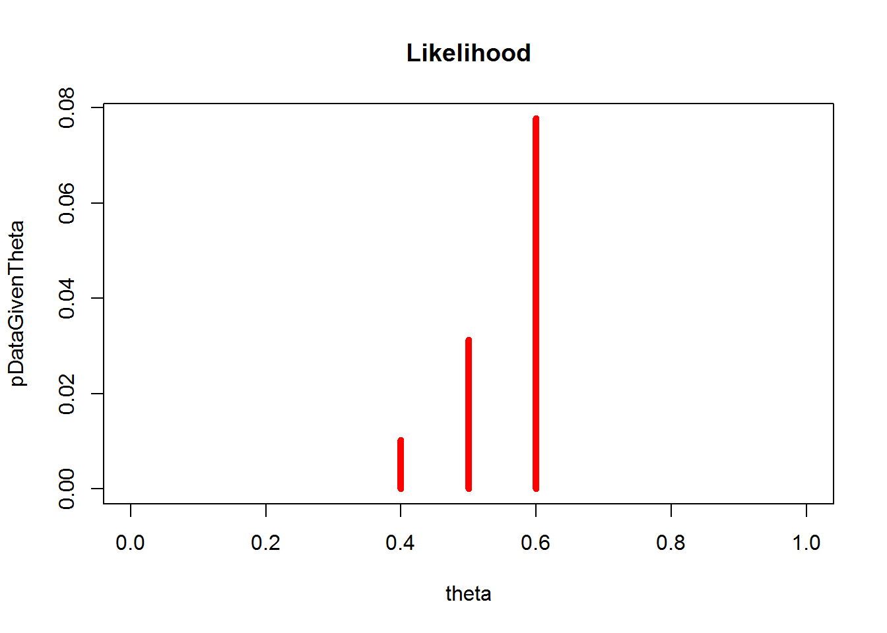

I’ve been reading How Not To Be Wrong: The Hidden Maths of Everyday Life by Jordan Ellenberg recently, unsurprisingly one of the chapters I’ve just read covered Bayesian Inference, and I wanted to turn the text into some R code. I haven’t finished the book yet, but it has been an enjoyable read thus far: the opening introduction, and specifically a story about the Mathematician Abraham Wald and the analysis of World War II planes and the bullet holes found on those planes, is particularly brilliant.
Anyways, the chapter titled Are You There, God? It’s Me Bayesian Inference, the chapter doesn’t throw Bayes Theorem at you, instead it nicely, and slowly, builds to an example using a roulette wheel. If you weren’t familiar with Bayes Theorem then this approach to learning it could be very helpful, though I wrote repeat the text here, you’ll have to buy the book, or go to a bookstore and read this chapter. The example looks at the ball landing on red or black, and the beliefs that the roulette wheel is fair, biased towards black, or biased towards red. The prior belief/confidence in each of these are as follows:
| Biased | Description | Prior |
|---|---|---|
| BLACK | The roulette wheel is biased to make the ball land on black 60% of the time | 0.05 |
| FAIR | The roulette wheel is fair, so the ball lands on red 50% of the time and black 50% of the time | 0.90 |
| RED | The roulette wheel is biased to make the ball land on red 60% of the time | 0.05 |
theta <- c(0.4, 0.5, 0.6) # black, fair, red theories
pTheta <- c(0.05, 0.9, 0.05)
plot(theta, pTheta, type = "h", col = "red", lwd = 5,
xlim = c(0, 1), ylim = c(0, 1), main = "Prior")The roulette wheel is spun 5 times, and the sequence comes up RED RED RED RED RED.
How likely is it that we spin the wheel 5 times and get 5 RED’s?
The answer depends on which of the three theories above is true:
(pDataGivenTheta <- theta^5)## [1] 0.01024 0.03125 0.07776plot(theta, pDataGivenTheta, type = "h", col = "red", lwd = 5,
xlim = c(0, 1), ylim = c(0, max(pDataGivenTheta)), main = "Likelihood")
The result of 5 RED’s is more likely if the roulette wheel is biased towards RED, than if the roulette wheel is FAIR or biased towards BLACK. To update our beliefs in light of this new evidence (5 RED’s) we follow Bayes Rule:
(pData <- sum( pDataGivenTheta * pTheta ))## [1] 0.032525# this is Bayes Rule
(pThetaGivenData <- pDataGivenTheta * pTheta / pData)## [1] 0.01574174 0.86471945 0.11953882plot(theta, pThetaGivenData, type = "h", col = "red", lwd = 5,
xlim = c(0, 1), ylim = c(0, 1), main = "Posterior")We can see that our beliefs have updated, but because we had such a strong prior that the roulette wheel was fair, we still believe that the roulette wheel is fairour beliefs haven’t updated much, if we spin the wheel another 10 times and find 7 RED’s and 3 BLACK’s, how do our beliefs change?
(pDataGivenTheta <- theta^7 * (1-theta)^3)## [1] 0.0003538944 0.0009765625 0.0017915904(pData <- sum(pDataGivenTheta * pThetaGivenData))## [1] 0.001064188(pThetaGivenData <- pDataGivenTheta * pThetaGivenData / pData)## [1] 0.005234895 0.793518167 0.201246939plot(theta, pThetaGivenData, type = "h", col = "red", lwd = 5,
xlim = c(0, 1), ylim = c(0, 1), main = "Posterior")What if we had been more skeptical of the roulette wheel, and believed that the roulette was biased towards RED, FAIR and biased towards BLACK with equal probability. How are our beliefs updated after seeing the same 5 RED’s?
theta <- c(0.4, 0.5, 0.6)
pTheta <- rep(1/3, 3)
(pDataGivenTheta <- theta^5)## [1] 0.01024 0.03125 0.07776(pData <- sum(pDataGivenTheta * pTheta))## [1] 0.03975(pThetaGivenData <- pDataGivenTheta * pTheta / pData)## [1] 0.08587002 0.26205451 0.65207547plot(theta, pThetaGivenData, type = "h", col = "red", lwd = 5,
xlim = c(0, 1), ylim = c(0, 1), main = "Posterior")